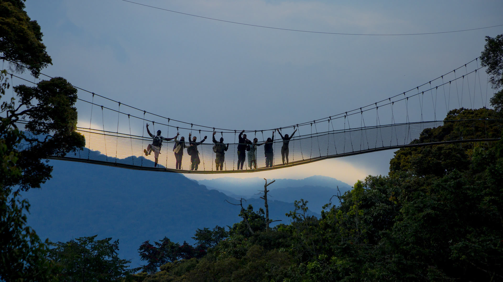
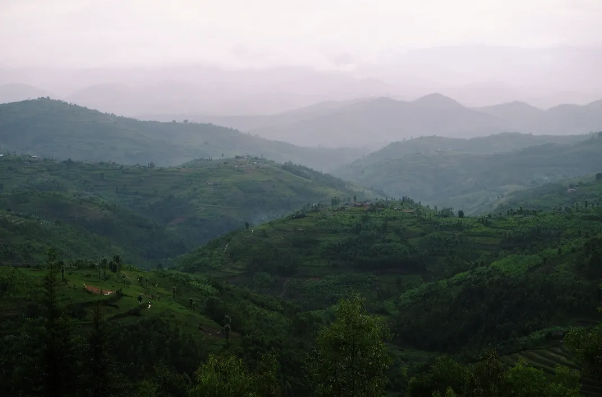
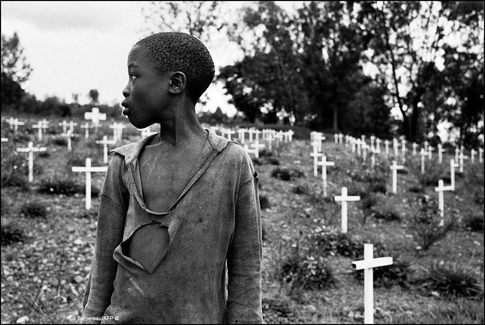

Nyungwe Forest National Park is one of Rwanda’s most stunning natural treasures. It is an ancient rainforest known for its rich biodiversity, including 13 primate species such as chimpanzees, and over 300 bird species. The forest is considered one of the best-preserved montane rainforests in Africa and was recently designated a UNESCO World Heritage Site.
Rwanda is generally considered one of the safest countries in Africa for travelers, with a low crime rate and a strong focus on security. The capital, Kigali, is known for its cleanliness and safety, making it a welcoming destination for visitors. However, some areas near the Burundi and Democratic Republic of the Congo (DRC) borders have been flagged for potential security risks due to armed violence.

Rwanda is often called the "Land of a Thousand Hills" due to its breathtaking landscape of rolling hills and mountains2. The country’s terrain is dominated by lush green hills, terraced farms, tea and coffee plantations, and picturesque valleys. This nickname reflects both the physical beauty of Rwanda and the resilience of its people, who have adapted to the hilly environment through innovative agricultural techniques like terraced farming.
The Rwandan Genocide occurred between April and July 1994, during which an estimated 500,000 to 800,000 Tutsi and moderate Hutu were systematically killed. The genocide was orchestrated by Hutu extremists, following years of ethnic tensions between the Hutu majority and Tutsi minority. The violence was triggered by the assassination of President Juvénal Habyarimana on April 6, 1994, which led to mass killings carried out by Hutu militias, including the Interahamwe. Many victims were murdered by their own neighbors, and between 250,000 and 500,000 women were subjected to sexual violence. Despite the scale of the atrocities, the international community failed to intervene in time to stop the killings. The genocide ended when the Rwandan Patriotic Front (RPF), led by Paul Kagame, took control of the country. Today, Rwanda has made significant strides in reconciliation and rebuilding, with memorials and laws in place to prevent genocide ideology.

Want to know more? Click on 'More history', at the far end of the top right of the navigation bar, then click on the available youtube video.